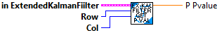
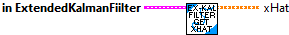
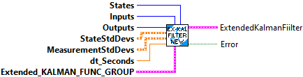
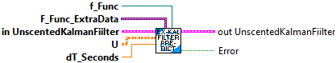
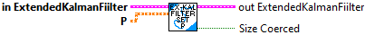

Correct the state estimate x-hat using the measurements in y.
This is useful for when the measurements available during a timestep's Correct() call vary.
Inputs:
- inExtendedKalmanFIlter -- filter data cluster
- rows -- Number of rows in the result of f(x, u).
- u -- Same control input used in the predict step.
- y -- Measurement vector.
- R -- Discrete measurement noise covariance matrix.
- h_Func -- A vector-valued function reference of x and u that returns the measurement vector.
- H_func_extra -- extra data, if any, used by H_Func
Returns:
- outExtendedKalmanFIlter -- updated filter data cluster
- error -- If TRUE, an error occured.

Correct the state estimate x-hat using the measurements in y.
Inputs:
- inExtendedKalmanFIlter -- filter data cluster
- u -- Same control input used in the predict step.
- y -- Measurement vector.
- h_Func -- A vector-valued function reference of x and u that returns the measurement vector.
- H_func_extra -- extra data, if any, used by H_Func
Returns:
- outExtendedKalmanFIlter -- updated filter data cluster
- error -- If TRUE, an error occured

Returns the error covariance matrix P.
Inputs:
- inExtendedKalmanFIlter -- filter data cluster
Output:
- P -- the error covariance matrix P.

Returns an element of the error covariance matrix P.
Inputs:
- inExtendedKalmanFIlter -- filter data cluster
- row Row of P.
- col Column of P.
Returns:
- outExtendedKalmanFIlter -- updated filter data cluster
- P_Value -- the value of the error covariance matrix P at (i, j).

Returns the state estimate x-hat.
Inputs:
- inExtendedKalmanFIlter -- filter data cluster
Returns:
- xHat -- the state estimate x-hat.

Returns an element of the state estimate x-hat.
Inputs:
- inExtendedKalmanFIlter -- filter data cluster
- row Row of x-hat.
Returns:
- xHat_value -- the value of the state estimate x-hat at i.

Kalman filters combine predictions from a model and measurements to give an estimate of the true system state. This is useful because many states cannot be measured directly as a result of sensor noise, or because the state is "hidden".
The Extended Kalman filter is just like the KalmanFilter Kalman filter, but we make a linear approximation of nonlinear dynamics and/or nonlinear measurement models. This means that the EKF works with nonlinear systems.
Constructs an extended Kalman filter.
- states -- the number of states.
- inputs -- the number of inputs.
- outputs -- the number of outputs.
- ExtendedKalmanFuncGroup -- definition of external functions used by this filter. it includes:
- f_func -- A vector-valued function of x and u that returns the derivative of the state vector.
- f_FuncExtra -- extra data, if any, used by the F_Func
- h_func -- A vector-valued function of x and u that returns the measurement vector.
- h_FuncExtra -- extra data, if any, used by the H_Func
- stateStdDevs -- Standard deviations of model states.
- measurementStdDevs -- Standard deviations of measurements.
- dtSeconds -- Nominal discretization timestep.
Outputs:
- ExtendedKalmanFilter -- filter data cluster

Project the model into the future with a new control input u.
Inputs:
- inExtendedKalmanFIlter -- filter data cluster
- u New control input from controller.
- F_Func -- reference a function used to linearlize the model.
- F_FuncExtraData -- extra data, if any, for the F_Func.
- dtSeconds Timestep for prediction.
Returns:
- outExtendedKalmanFIlter -- updated filter data cluster
- Error -- If TRUE, an error occured.

Resets the filter.
Inputs:
- inExtendedKalmanFIlter -- filter data cluster
Returns:
- outExtendedKalmanFIlter -- updated filter data cluster

Sets the entire error covariance matrix P.
Inputs:
- inExtendedKalmanFIlter -- filter data cluster
- newP The new value of P to use.
Returns:
- outExtendedKalmanFIlter -- updated filter data cluster
- sizeCoerced -- If TRUE, an unexpected error occured.

Set initial state estimate x-hat.
Inputs:
- inExtendedKalmanFIlter -- filter data cluster
- xHat The state estimate x-hat.
Returns:
- outExtendedKalmanFIlter -- updated filter data cluster
- sizeCoerced -- If TRUE, an unexpected error occured.

Set an element of the initial state estimate x-hat.
Inputs:
- inExtendedKalmanFIlter -- filter data cluster
- row Row of x-hat.
- value Value for element of x-hat.
Returns:
- outExtendedKalmanFIlter -- updated filter data cluster
- Error -- If TRUE, an error occurred.